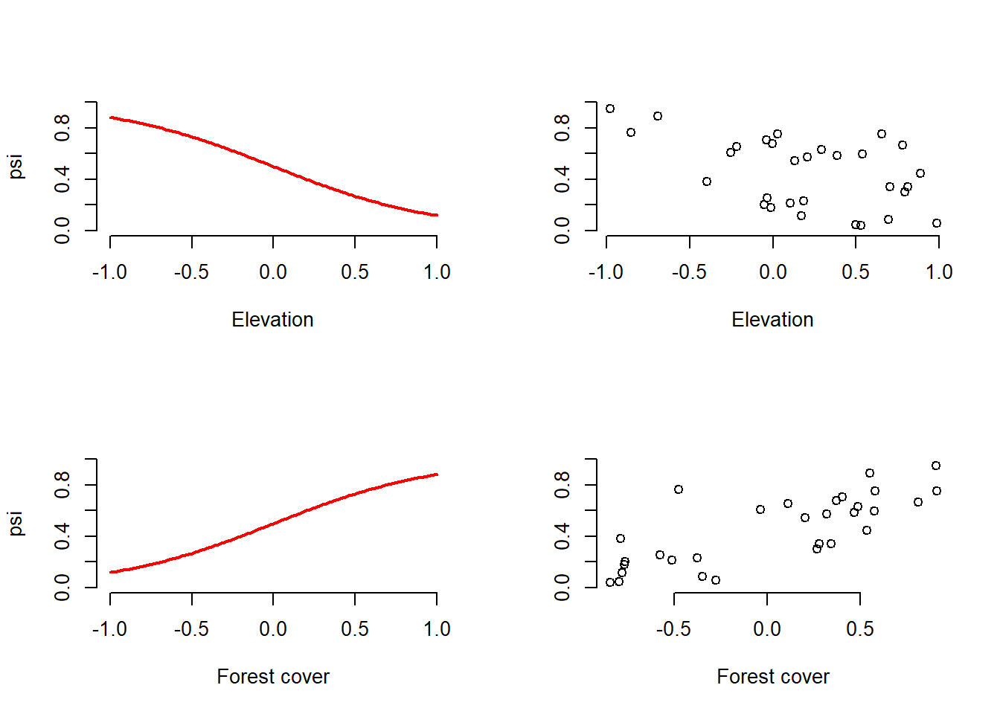

Chapter5 Packing everything into a function
It could be very useful to pack everything we’ve done into a single function that allows us to do the same thing many times over and over again. This will allow us to design simulations in a more concise and flexible way and makes the generation of parameters used to generate data more transparent. So let’s define a function (which we’ll call data.fn) to generate the same data type we just created, assigning arguments to the function, such as sample size, covariate effects, and interaction directions and magnitudes. of the detection error and occupancy terms. This will make our code more flexible and efficient.
###############################
## The function starts here ###
###############################
# Function definition with set of default values
data.fn <- function(M = 60, J = 30, mean.occupancy = 0.6,
beta1 = -2, beta2 = 2, beta3 = 1, mean.detection = 0.3,
alpha1 = -1, alpha2 = -3, alpha3 = 0, show.plot = TRUE){
# Function to simulate occupancy measurements replicated at M sites during J occasions.
# Population closure is assumed for each site.
# Expected occurrence may be affected by elevation (elev),
# forest cover (forest) and their interaction.
# Expected detection probability may be affected by elevation,
# temperature (temp) and their interaction.
# Function arguments:
# M: Number of spatial replicates (sites)
# J: Number of temporal replicates (occasions)
# mean.occupancy: Mean occurrence at value 0 of occurrence covariates
# beta1: Main effect of elevation on occurrence
# beta2: Main effect of forest cover on occurrence
# beta3: Interaction effect on occurrence of elevation and forest cover
# mean.detection: Mean detection prob. at value 0 of detection covariates
# alpha1: Main effect of elevation on detection probability
# alpha2: Main effect of temperature on detection probability
# alpha3: Interaction effect on detection of elevation and temperature
# show.plot: if TRUE, plots of the data will be displayed;
# set to FALSE if you are running simulations.
# Create covariates
elev <- runif(n = M, -1, 1) # Scaled elevation
forest <- runif(n = M, -1, 1) # Scaled forest cover
temp <- array(runif(n = M*J, -1, 1), dim = c(M, J)) # Scaled temperature
# Model for occurrence
beta0 <- qlogis(mean.occupancy) # Mean occurrence on link scale
psi <- plogis(beta0 + beta1*elev + beta2*forest + beta3*elev*forest)
z <- rbinom(n = M, size = 1, prob = psi) # Realised occurrence
# Plots
if(show.plot){
par(mfrow = c(2, 2), cex.main = 1)
devAskNewPage(ask = TRUE)
curve(plogis(beta0 + beta1*x), -1, 1, col = "red", frame.plot = FALSE,
ylim = c(0, 1), xlab = "Elevation", ylab = "psi", lwd = 2)
plot(elev, psi, frame.plot = FALSE, ylim = c(0, 1), xlab = "Elevation",
ylab = "")
curve(plogis(beta0 + beta2*x), -1, 1, col = "red", frame.plot = FALSE,
ylim = c(0, 1), xlab = "Forest cover", ylab = "psi", lwd = 2)
plot(forest, psi, frame.plot = FALSE, ylim = c(0, 1), xlab = "Forest cover",
ylab = "")
}
# Model for observations
y <- p <- matrix(NA, nrow = M, ncol = J)# Prepare matrix for y and p
alpha0 <- qlogis(mean.detection) # mean detection on link scale
for (j in 1:J){ # Generate counts by survey
p[,j] <- plogis(alpha0 + alpha1*elev + alpha2*temp[,j] + alpha3*elev*temp[,j])
y[,j] <- rbinom(n = M, size = 1, prob = z * p[,j])
}
# True and observed measures of 'distribution'
sumZ <- sum(z) # Total occurrence (all sites)
sumZ.obs <- sum(apply(y,1,max)) # Observed number of occ sites
psi.fs.true <- sum(z) / M # True proportion of occ. sites in sample
psi.fs.obs <- mean(apply(y,1,max)) # Observed proportion of occ. sites in sample
# More plots
if(show.plot){
par(mfrow = c(2, 2))
curve(plogis(alpha0 + alpha1*x), -1, 1, col = "red",
main = "Relationship p-elevation \nat average temperature",
xlab = "Scaled elevation", frame.plot = F)
matplot(elev, p, xlab = "Scaled elevation",
main = "Relationship p-elevation\n at observed temperature",
pch = "*", frame.plot = F)
curve(plogis(alpha0 + alpha2*x), -1, 1, col = "red",
main = "Relationship p-temperature \n at average elevation",
xlab = "Scaled temperature", frame.plot = F)
matplot(temp, p, xlab = "Scaled temperature",
main = "Relationship p-temperature \nat observed elevation",
pch = "*", frame.plot = F)
}
# Output
return(list(M = M, J = J, mean.occupancy = mean.occupancy,
beta0 = beta0, beta1 = beta1, beta2 = beta2, beta3 = beta3,
mean.detection = mean.detection,
alpha0 = alpha0, alpha1 = alpha1, alpha2 = alpha2, alpha3 = alpha3,
elev = elev, forest = forest, temp = temp,
psi = psi, z = z, p = p, y = y, sumZ = sumZ, sumZ.obs = sumZ.obs,
psi.fs.true = psi.fs.true, psi.fs.obs = psi.fs.obs))
}
###############################
## The function ends here ###
###############################Once we have defined the function and executed its code, we can call it repeatedly and output the results to the screen or assign them to an object in R. So that we can use the dataset stored in the object for detailed analysis.
# Run this part line by line, taking note of the meaning of the
# model in the comment and hitting Enter after each graph.
# Take in to account that if you do not override all the parameters
# with another value, the function will use the default values.
data.fn() # Execute function with default arguments
data.fn(show.plot = FALSE) # same, without plots
objeto1 <- data.fn(M = 30, J = 10, mean.occupancy = 0.5,
beta1 = -2, beta2 = 2, beta3 = 1,
mean.detection = 0.25, alpha1 = -1,
alpha2 = -3, alpha3 = 0, show.plot = TRUE) # Explicit defaults
Perhaps the simplest possible use for this function is to experience the sampling error by firsthand: which is the natural variability from repeated runs (several data sets) of our stochastic process by which we compute the data sets. We are going to simulate 10,000 tapir data sets to see how they vary in terms of the true number of occupied sites (sumZ in the code) and the number of sites where tapirs were observed at least once. Note that the data generated in the 10,000 has default parameters in the mean.occupancy and mean.detection parameters.
simrep <- 10000
trueSumZ <- obsSumZ <- numeric(simrep)
for(i in 1:simrep){
if(i %% 1000 ==0 ) # report progress
cat("iter", i, "\n")
data <- data.fn(M = 60,J = 3,show.plot = FALSE) # 60 sitios, 3 muestreos, p=0.3
trueSumZ[i] <- data$sumZ
obsSumZ[i] <- sum(apply(data$y, 1, max))
}## iter 1000
## iter 2000
## iter 3000
## iter 4000
## iter 5000
## iter 6000
## iter 7000
## iter 8000
## iter 9000
## iter 10000plot(sort(trueSumZ), ylim = c(min(obsSumZ), max(trueSumZ)), ylab = "", xlab = "Simulation",
col = "red", main = "True (red) and observed (blue) number of occupied sites")
points(obsSumZ[order(trueSumZ)], col = "blue")Figure 5.1: Natural variability (sampling error) of the true number of occupied sites (ordered by size) in red and the observed number of occupied sites (in blue). The number of sites observed/total is also known as the naïve occupancy of deer occurrence at 60 sites in the simulation. The width of the blue area represents the error induced by imperfect detection. Note the importance of taking this error into account to get a better idea of the occupation.
As an exercise, change the code to again generate the 10,000 simulations with medium (mean.detection =0.5), high (mean.detection =0.8), and perfect detection (mean.detection =1). Compare the resulting graphs.
Now we can use this function to generate data under different sampling schemes, varying the number of sites and the number of repeated samples. As well as under different ecological and detection characteristics, and considering possible interactions between covariates.
# Run this part line by line, taking note of the meaning of the
# model in the comment and hitting Enter after each graph.
# Take in to account that if you do not override all the parameters
# with another value, the function will use the default values.
data.fn(J = 1, show.plot = T) # Only 1 survey (no temporal replicate)
data.fn(J = 2, show.plot = T) # Only 2 surveys (sites)
data.fn(M = 5, J = 3) # Only 5 sites, 3 counts (repeted visits)
data.fn(M = 1, J = 100) # No spatial replicates, but 100 counts
data.fn(M = 1000, J = 100) # Very intensive sampling. 1000 sites, 100 visits
data.fn(mean.occupancy = 0.6, # psi = 0.6 and
mean.detection = 1, # p = 1 (perfect detection!!!)
show.plot = T)
data.fn(mean.occupancy = 0.95, # psi = 1 a really coomon sp.
mean.detection = 1, # p = 1 (perfect detection!!!)
show.plot = T)
data.fn(mean.occupancy = 0.05, # psi = 0.05 a really rare sp.
mean.detection = 0.05, # p = 0.05 and very hard to detect !!!
show.plot = T)
data.fn(beta3 = 1.5, show.plot = TRUE) # With interaction elev-temp on p
data.fn(mean.occupancy = 0.6, beta1 = -2, beta2 = 2, beta3 = 1,
mean.detection = 0.1, show.plot = TRUE) # p = 1 (low detectability)
data.fn(M = 267, J = 5, mean.occupancy = 0.6, beta1 = 0, beta2 = 0, beta3 = 0,
mean.detection = 0.4, alpha1 = 0, alpha2 = 0, alpha3 = 0, show.plot = TRUE)
# Simplest case with occupancy (0.6) and detection (0.4) constant, no covariate effects
# observe betas = 0, and alphas = 0. This correspond to a kind of null model.CONGRATULATIONS!!!, if you got this far, and if you understood the data simulation and its procedure, then you fully understood the basic occupancy model, which is the cornerstone of modern biological sampling and monitoring.